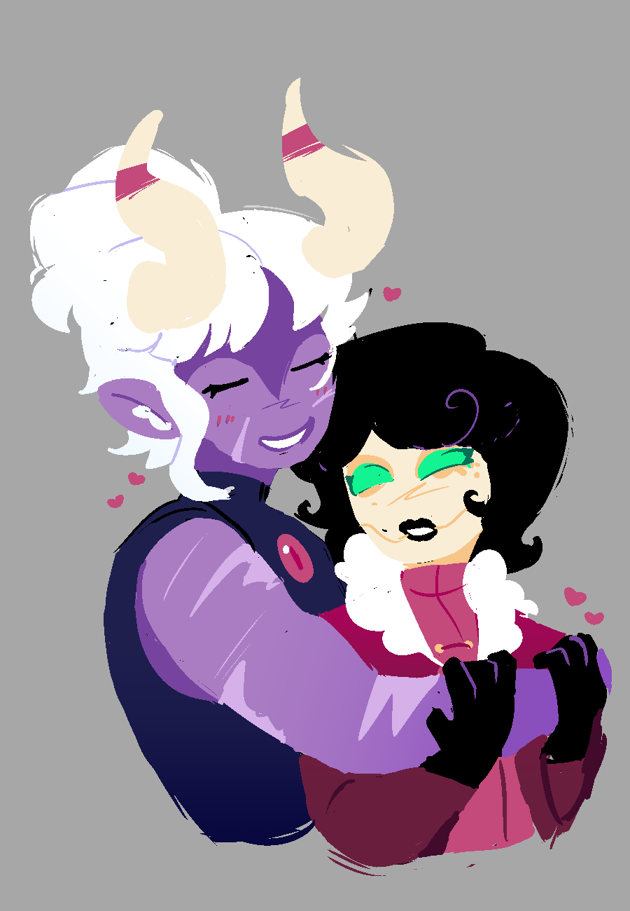

Siempre que me pongo a pensar como empezo este sentimiento para mi; Me acuerdo de que tan emocionada estaba de verte en veracruz.
Porque tengo que admitir, yo planee ese viaje principalmente para poderte ver. Claro, ver a jean y a mi amigo Ian valia la pena; Mas lo unico por lo que hubiera cancelado todo era si no hubieras podido venir
Me tarde muchisimo más tiempo en darme cuenta de donde venia este sentimiento. Y aun más en aceptarr que la idea de ser tu novia, de estar junto a ti, era algo que queria
Fue mediante magdalena que este sentimiento tan hermoso empezo a florecer. Me refleje tanto en magdalena conforme el tiempo paso
Especialmente en esa carta, dios.
"Algun dia tendre las agallas para decir te amo"
Aunque yo no supiera, lo sentia profundamente dentro de mi ser Tambien, intentaba pensar tanto en un final bonito para las dos, imaginandome como magdalena se declararia a madeline
Porque yo no podia; yo ya habia aceptado que lo mas cerca que iba a poder estar, hiba a ser como amiga. Pero dios, aca estamos, y resulta que las dos intentamos esconder esto de la otra
Lo he dicho mil veces, y lo diria mil veces mas
Te amo Vanessa, con todo mi corazon.
Te agradezco con toda mi alma y mi ser por alegrarme todos los días, por ser mi musa, por ser mi novia, por ser mi amiga, y por ser la persona mas importante en mi vida
Te amo Vanessa
- La idiota de tu novia